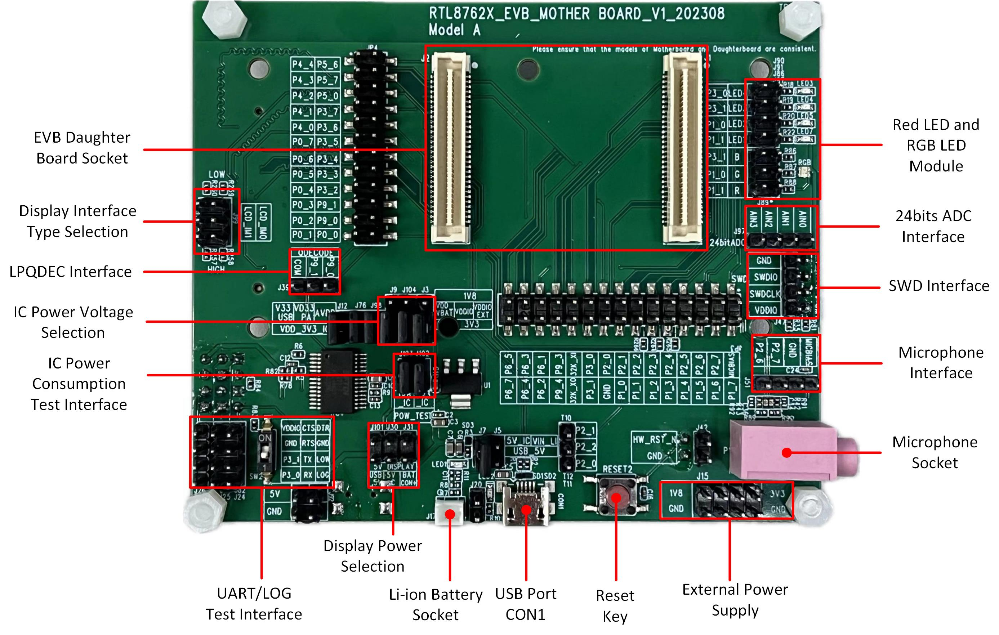
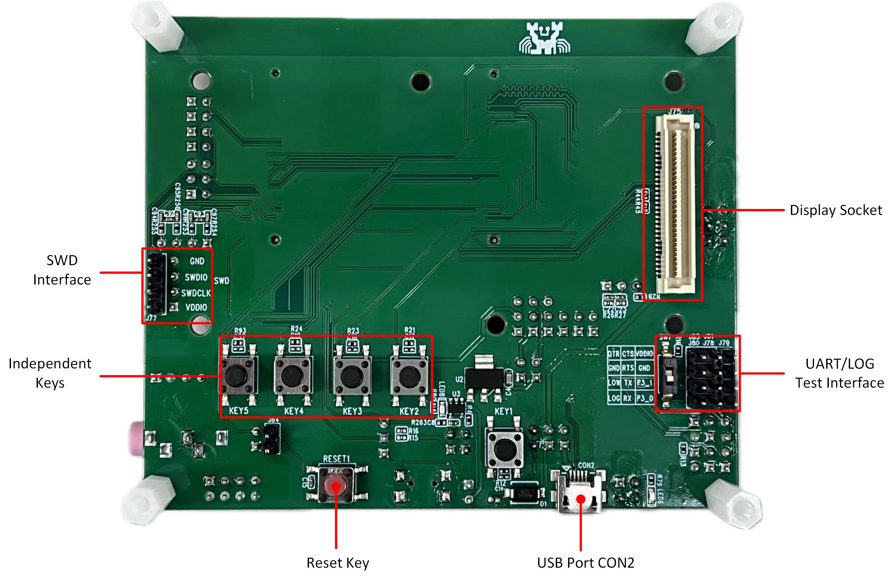
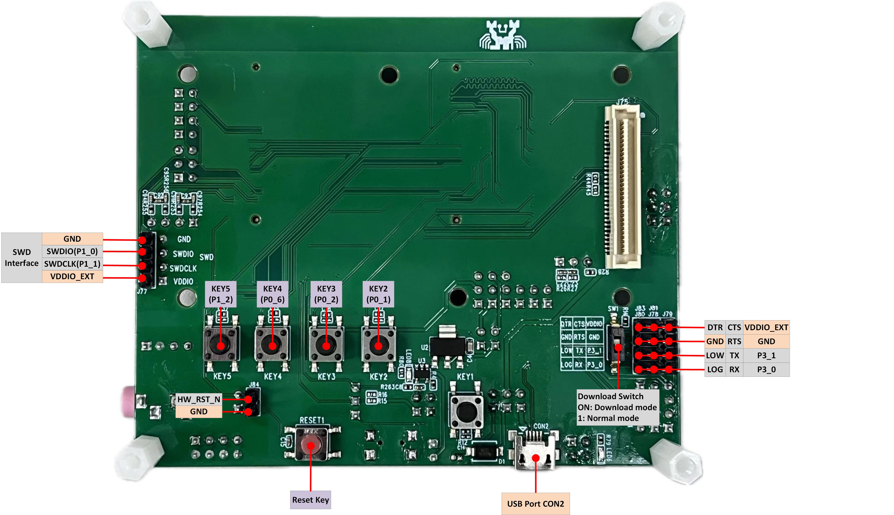
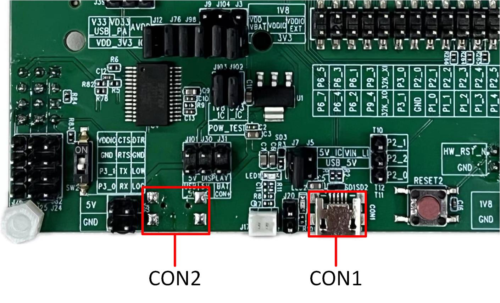
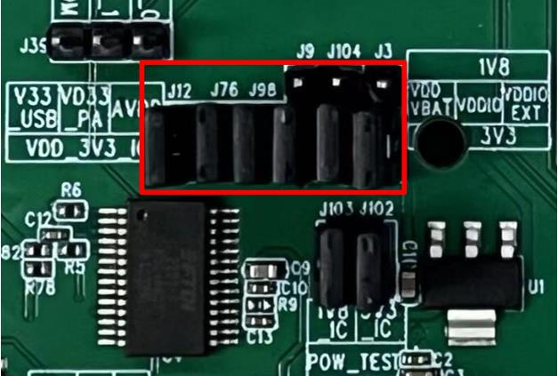
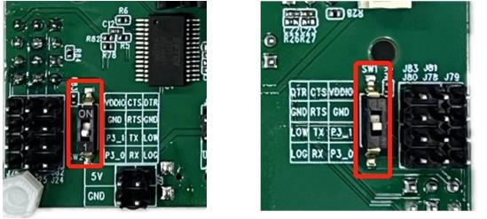
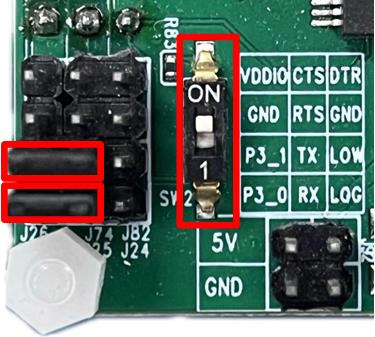
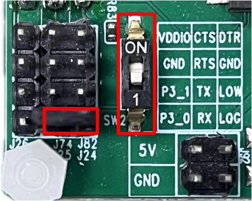
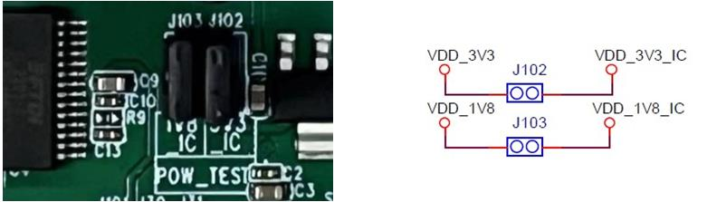
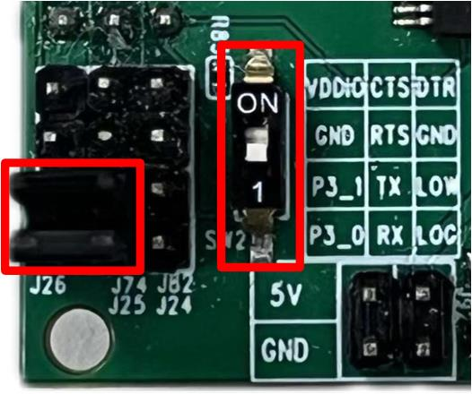

Model A Evaluation Board
Overview
The RTL87x2G Model A evaluation board is compatible with the following daughter boards:
The RTL87x2G Model A evaluation board provides a hardware environment for user development, including:
5V to 3.3V & 1.8V LDO power module
Support QSPI (Group1) display interface
Red LED and RGB LED module
Note
To purchase EVB, please visit the official Realtek website for Shopping Guide.
Blocks Distribution
Blocks Distribution on the Front and Back of the Model A evaluation board are as following.
{kind=link}

Model A EVB Blocks Distribution Diagram-Front
{kind=link}

Model A EVB Blocks Distribution Diagram-Back
The following introduces the blocks on the evaluation board in counterclockwise order.
Blocks |
Introduction |
|---|---|
EVB Daughter Board Socket |
Used to connect the EVB Daughter Board with an anti-reverse insertion mechanism. |
Model A evaluation board only supports QSPI (Group1) display interface. |
|
QDEC Interface |
Used to connect the quadrature-encoded sensor. |
Provides IC power voltage options of 1.8V or 3.3V. |
|
Provides IC power consumption test interface for 1.8V or 3.3V. |
|
Supports download mode and normal mode. |
|
Supports USB Port CON1, CON2, or battery to power the display. |
|
Two pins socket to connect a single cell Li-ion battery. |
|
Used to power EVB and communicate with RTL87x2G via USB. |
|
Reset Key |
Pressing this key resets the system. |
External Power Supply |
Provides external power supply of 1.8V and 3.3V. |
Microphone Socket |
Supports 3.5mm audio interface. |
Microphone Interface |
Used to connect the external Microphone daughter board. |
SWD Interface |
Used to SWD debug. |
24bits ADC Interface |
24bits ADC, AIN0-3 can be used as four single-ended inputs. AIN0-1 and AIN2-3 can be used as two differential inputs. |
Provides four red LEDs and one RGB LED. |
|
Independent Keys |
KEY2, KEY3, KEY4, KEY5 are connected to P0_1, P0_2, P0_6 and P1_2 respectively. |
Used to power the EVB and connect USB to UART chip FT232RL for downloading programs or debug. |
|
Display Socket |
Used to connect display screen. |
Interfaces Distribution

Model A EVB Interfaces Distribution Diagram-Front
{kind=link}

Model A EVB Interfaces Distribution Diagram-Back
Blocks and Interfaces Introduction
EVB Daughter Board
EVB daughter board can be removed and replaced. There is an anti-reverse insertion mechanism between mother board and daughter board. RTL8762GRU/GRH, RTL8762GKU/GKH and RTL8762GC daughter boards are compatible with the RTL87x2G Model A evaluation board.

RTL8762GRU/GRH & RTL8762GKU/GKH Daughter Board

RTL8762GC Daughter Board
Power
- USB Port CON1
USB Port CON1 is used to power the Model A evaluation board and communicate with RTL87x2G via USB.
- USB Port CON2
USB Port CON2 is used to power the Model A evaluation board and connect USB to UART chip FT232RL for downloading programs or debug.
{kind=link}

USB Port CON1 and CON2 of Model A EVB
- Li-ion Battery Socket
Model A evaluation board supports Li-ion Battery Power Supply. By connecting the jumper marked in red, the Li-ion battery can be charged by USB.

Li-ion Battery Socket of Model A EVB
- IC Power Voltage Selection
VDD_VBAT/VDDIO/VDDIO_EXT can choose 1.8V or 3.3V power supply according to the actual application, with default connection of 3.3V. Power input pins are introduced as follows:
Pin Name |
Function |
|---|---|
V33_USB |
Power supply for USB transceiver |
VD33_PA |
Power supply for the internal +14dBm radio power amplifier |
AVDD |
Power supply for the internal 24bits ADC |
VDD_VBAT |
Power supply for the internal regulator and analog circuitry |
VDDIO |
Power supply for PAD and Flash |
VDDIO_EXT |
Power supply for external devices |
{kind=link}

IC Power Voltage Selection of Model A EVB
Note
VDDIO and VDDIO_EXT power supplies should be consistent.
If the IC does not have a VDDIO power input pin, the VDD_VBAT powers supply for the internal regulator, analog circuitry, PAD, and Flash of the IC.
When using the RTL8762GRU/GRH daughter board, VDD_VBAT can only choose 3.3V.
EVB Interfaces
UART/LOG Test Interface
- Download Mode:
Need to set the dial switches SW1/SW2 to ON position, which will pull down the LOG pin, then press reset button or power on again to enter download mode.
- Normal Mode:
Need to set the dial switches SW1/SW2 1 position, which will pull none the LOG pin, then press reset button or power on again to start running the program. Log pin can be used for debug. Please refer to Normal Mode Connection.
{kind=link}

UART/LOG Test Interface of Model A EVB
- Red LED and RGB LED module
Red LED and RGB LED Module can be connected to the pin header within the red box through jumpers, allowing the default GPIO to control the LED and RGB. Alternatively, you can use dupont wires to connect the pin header on the right side of the red box to any GPIO for controlling the LED and RGB.

Red LED and RGB LED Module of Model A EVB
EVB Pin Assignment
Please refer to the latest RTL87x2G IOPin Information Table about the pin assignment of EVB.
EVB User Guide
EVB Power Connection
Model A EVB can be powered independently using USB Port CON2, in which case the USB communication function of RTL87x2G cannot be used, but programs can be normally downloaded into RTL87x2G. The power connection of the evaluation board is shown below. All jumpers marked in the red box need to be connected.

Power Supply with USB Port CON2 of Model A EVB
If the USB communication function of RTL87x2G needs to be used, both the USB Port CON1 and CON2 on the evaluation board need to be connected. In this situation, the power supply connection s as following: All jumpers marked in the red box need to be placed.

Power Supply with USB Port CON1 and CON2 of Model A EVB
Download Mode Connection
P0_3 (log) is the download mode selection pin. When P0_3 is pulled low, hardware reset or power cycling will put the system into download mode. Use jumpers to connect P3_0 to RX and P3_1 to TX. Set the DIP switch to the ON position (pulling P0_3 low), and then perform a hardware reset or power on the board to enter download mode. After the program download is complete, set the dial switches SW1/SW2 back to the 1 position, allowing P0_3 to return to a floating state. Finally, perform a hardware reset or power cycle the board, and the program will run normally.
{kind=link}

Download Mode Connection of Model A EVB
Normal Mode Connection
Please confirm that the dial switches SW1/SW2 are set to the 1 position. Then place the jumper on the red box in the figure below. Connect P0_3 (log) to RX. P3_0 and P3_1 are disconnected from RX and TX respectively. Use the Debug Analyzer via the USB port CON2 for debug.
{kind=link}

Normal Mode Connection of Model A EVB
Display Interface
- Power select
It supports USB Port CON1, CON2, or Li-ion battery to power the display.

Display Power Select of Model A EVB
- Display interface type select
Display type interface can be selected by setting the status of LCD_IM[1:0] based on used screen. Please refer to the datasheet of display driver chip for details.
PIN Name |
QSPI (Group1) Interface |
|---|---|
P0_4 |
TP_RST |
P2_3 |
TP_INT |
P2_4 |
TP_SCL |
P2_5 |
TP_SDA |
P3_5 |
LCD_BL_CTRL |
P4_3 |
QSPI_CS |
P3_4 |
QSPI_DCX |
P4_0 |
QSPI_CLK (PHY) |
P3_3 |
QSPI_SIO3 |
P3_2 |
QSPI_SIO2 |
P4_1 |
QSPI_SIO1 |
P4_2 |
QSPI_SIO0 |
P3_6 |
LCD_RESX |
P0_5 |
LCD_TE (VSYNC) |
IC Power Consumption Test
Model A evaluation board provides power consumption test interface for 1.8V and 3.3V.
When the IC is powered by 3.3V, disconnect J102 before measuring. Then connect the ammeter to measure the current passing through J102.
When the IC is powered by 1.8V, disconnect J103 before measuring. Then connect the ammeter to measure the current passing through J103.
{kind=link}

IC Power Consumption Test Interface
Note
Please properly connect the jumpers according to the Introduction of Power Supply Input Pins and the power consumption test scenarios.
To avoid extra power consumption, it is necessary to turn off log printing.
To avoid the effect of debugging equipment, please do not connect UART, SWD, and debugger.
When using an external DC power supply, the jumpers of J102 and J103 need to be unplugged, then DC power needs to be connected to VDD_3V3_IC or VDD_1V8_IC.
RF Test
When performing RF performance testing for Bluetooth/Zigbee using the RF Test Tool, the two jumpers marked in red need to be connected, and then set the DIP switches on both the front and back to the 1 position, allowing P0_3 to return to a floating state, P3_0 connected to RX, and P3_1 connected to TX.
{kind=link}

Connection for RF Test